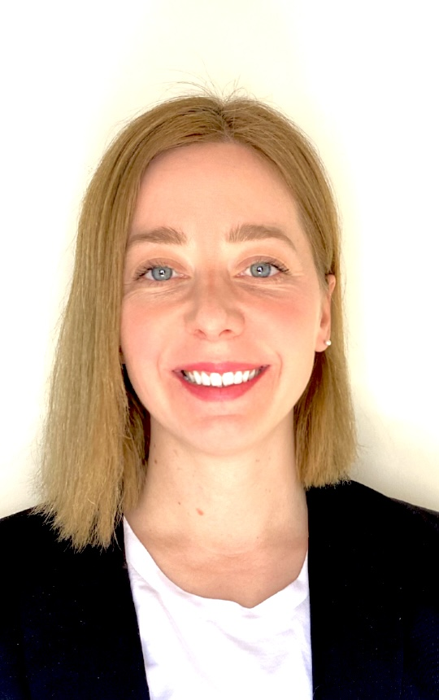

Physician · MD, OB-GYN & Reproductive Medicine
Pharmacovigilance & Safety Data Science
Physician moving into pharmacovigilance and safety data science, after 10+ years managing complex reproductive medicine cases — including treatment-related complications such as OHSS — where clinical judgment about drug safety was part of daily practice, not a separate discipline.
My MSc thesis applies FAERS disproportionality analysis (PRR, ROR, BCPNN) and MedDRA coding to detect pharmacovigilance signals in reproductive medicine. I build the same rigor into data pipelines across healthcare and bioinformatics.

End-to-end analytical work combining clinical domain expertise with reproducible data pipelines and stakeholder-facing reporting.
Applying disproportionality analysis (PRR, ROR, BCPNN) and MedDRA coding to FAERS to detect pharmacovigilance signals in drug combinations used in reproductive medicine.
6-stage reproducible pipeline integrating 4 multi-source personal datasets (Apple Health, Spotify, Netflix, Mercado Libre). Four interactive visualizations, each answering a specific analytical question about behavioral KPIs — delivered as a narrative storytelling report.
Relational database in PostgreSQL analyzing hospital management and resource utilization. OLAP queries for productivity, medication consumption, and cost recovery, supporting stakeholder decisions in public health resource allocation.
SVM model for clinical decision support, with emphasis on clinically relevant performance metrics — sensitivity, specificity, AUC — over raw accuracy.
Reproducible bioinformatics pipeline for 118,672 single cells × 27,254 genes. Seurat workflow for stem/progenitor marker identification.
Ten years of clinical practice, now converging with formal data science training.
Full-scope fertility care and outcomes analysis on the practice's patient database; alongside an MSc in Data Science (ITBA) and a thesis applying FAERS disproportionality analysis to pharmacovigilance signal detection.
Reproductive immunology and implantation failure cases, alongside a Diploma in Clinical Genetics & Rare Diseases (UPV).
Genomic and clinical data analysis for women's health research in Valencia, as part of an MSc in Bioinformatics (VIU).
Alongside OB-GYN emergency care at Hospital Naval Pedro Mallo and Hospital J.M. Penna.
Hospital J.M. Penna, Buenos Aires — full residency training in a high-volume public hospital.
I treat continuous training as part of the job, not separate from it — it's what keeps a clinical practice current with new tools and methods, from clinical genetics to data science. I also teach occasionally in the OB-GYN specialization program at UBA, since 2018.
Pharmacovigilance leads — the rest supports it.